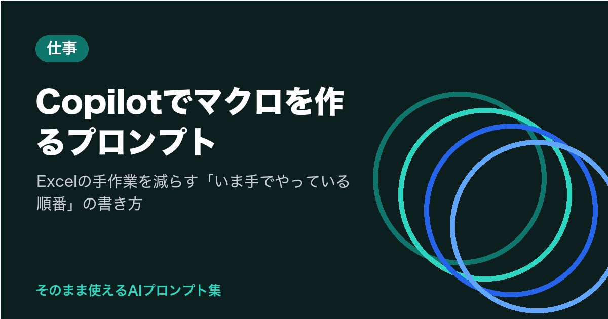

Copilotでマクロを作るプロンプト｜Excelの手作業を減らす「いま手でやっている順番」の書き方
※この記事はプロモーション（広告）を含みます

毎週、同じExcelで同じ手順を繰り返していませんか。シートからシートへ数字を転記して、並べ替えて、印刷して。
Copilotでマクロを作るプロンプトは、「いま手でやっている順番を、そのまま箇条書きで渡す」だけで十分です。たとえば「1. 入力シートのA列からD列をコピー、2. 集計シートの最終行の下に貼る、3. 日付で並べ替える」と書けば、その順番どおりに動くVBA（Excelのマクロの言語）のコードが返ってきます。
この記事では、Copilot Chatに頼んでコードをもらい、Excelに貼って動かすまでの手順と、転記・集計・印刷の場面別プロンプト、動かないときの直し方を、コピーして使える形で紹介します。
まずはこれだけ：マクロを作る基本プロンプト
最初の1本は、この型で試してみてください。【 】の中を、あなたの作業に書き換えます。
使っているExcel：【例：Microsoft 365のExcel（Windows）】
ブックの構成：【例：「入力」シートと「集計」シートの2枚。入力シートは1行目が見出しで、A列が日付、B列が品番、C列が数量、D列が担当者】
いま手でやっている順番：
1. 【例：入力シートの2行目から最終行までのA〜D列をコピーする】
2. 【例：集計シートの、データが入っている最終行の次の行に貼り付ける】
3. 【例：集計シートをA列の日付で古い順に並べ替える】
4. 【例：入力シートの2行目以降を消す】
条件：シート名と列は上に書いたとおりに使ってください。コードの各行に、何をしているかの短いコメントを日本語で入れてください。最後に、このマクロをExcelに入れて実行する手順を3行で教えてください。
ポイントは2つです。1つめは「いま手でやっている順番」をそのまま書くこと。頭の中で「転記して集計」とまとめずに、クリックしている順番を番号で並べると、Copilotの出すコードが、あなたの作業にそのまま合います。2つめは、シート名と列を具体的に書くこと。ここがあいまいだと、Copilotは「Sheet1」「A列」のような仮の名前で書いてきて、あとで直す手間が増えます。
私も最初は「転記を自動化して」の一言だけで頼んで、どのブックにも当てはまらない一般的なコードが出てきて、結局動かせなかったことがあります。「順番」と「シートの構成」の2つを足すだけで、1回目から動く確率がはっきり変わります。
頼み方の前後を並べると、違いが見えます。
| 頼み方 | 出てくるもの |
|---|---|
| 「転記を自動化するマクロを書いて」 | 仮のシート名・仮の列で書かれた一般的なコード。自分のブックに合わせて直す場所が多い |
| 「順番」と「ブックの構成」を書いて頼む | あなたのシート名と列で書かれたコード。貼ってすぐ試せる |
Copilotのどこに頼むか（Chat・Excelの中のCopilot）
会社のMicrosoft 365に入っているCopilotには、マクロ作りに使える入口が2つあります。執筆時点（2026年10月）の公式サイトの案内をもとにした整理で、使える機能は会社の契約（ライセンス）や設定で変わります。
| 入口 | 向いていること | 気をつける点 |
|---|---|---|
| Copilot Chat（チャット画面） | VBAのコードを書いてもらう。直し方を相談する | コードは出てくるが、Excelへの貼り付けと実行は自分で行う |
| Excelの中のCopilot | 表の分析、数式の提案、並べ替えや書式の操作 | 執筆時点の公式案内では、Copilot in ExcelがVBAのマクロを直接作って実行する機能は中心ではありません。マクロのコードはCopilot Chatで作り、Excelに貼る流れが確実です |
つまり、マクロを作るならCopilot Chatです。Excelの中のCopilotは、「この表を月ごとに集計して」のような、その場の操作に向いています。数式で済む作業なら、マクロにしないほうが管理も楽です。数式の頼み方はExcelの関数をAIに教えてもらうプロンプトで紹介しています。
マクロが向くのは、「同じ手順を、毎週・毎月、同じ形のブックで繰り返す」作業です。1回きりの作業や、毎回形が変わる表には、数式かその場の操作のほうが向いています。
もらったコードをExcelに入れて動かす手順
Copilotからコードをもらったら、次の手順でExcelに入れます。画面の名前は執筆時点のもので、バージョンで少し変わることがあります。
- マクロを入れたいブックを開き、Alt + F11 を押してVBAの編集画面（VBE）を開く
- 左の一覧で自分のブック名を右クリック →「挿入」→「標準モジュール」
- 開いた白い画面に、Copilotからもらったコードを貼る
- Excelの画面に戻り、Alt + F8 を押してマクロの一覧を出し、名前を選んで「実行」
- ブックを保存するときは、ファイルの種類を「Excelマクロ有効ブック（.xlsm）」にする
はじめて試すときは、元のブックのコピーで動かしてください。マクロは「元に戻す」（Ctrl + Z）が効かないことが多いので、うまく動かなかったときに戻せるように、試す前にコピーを作っておくのが、いちばん簡単な保険です。
もう1つ。会社のPCでは、セキュリティの設定でマクロの実行が止められていることがあります。「マクロが無効にされました」と出たら、情報システム部門に、業務でマクロを使ってよいか、どの設定で使うのかを確かめてください。設定を自分で変えるより、先に聞くほうが早くて安全です。
場面別のプロンプト例（転記・集計・印刷・ファイルの整理）
基本の型が使えるようになったら、「順番」の部分を場面に合わせて書き換えます。生産管理や品質、営業支援の毎日でよくある4つの場面です。
日報を集計シートに転記する
ブックの構成：【例：「日報」シート（1行目が見出し、A列：日付、B列：ライン名、C列：生産数、D列：不良数）と「月次」シート（同じ列の並び）】
いま手でやっている順番：
1. 日報シートの2行目から最終行までを、月次シートの最終行の下に貼る
2. 月次シートのE列に、D列÷C列の不良率を小数で入れる（C列が0か空欄なら空欄のまま）
3. 日報シートの2行目以降を消す
条件：シート名と列はこのとおりに。各行に日本語の短いコメントを。0で割るエラーが出ないようにしてください。
月ごとに集計して別シートに出す
ブックの構成：【例：「明細」シート（A列：日付、B列：得意先、C列：金額）】
いま手でやっている順番：
1. 「集計」という名前のシートがなければ作り、あれば中身を消す
2. 明細シートの日付を年月ごとにまとめ、得意先ごとの金額の合計を、集計シートに「年月・得意先・合計」の3列で出す
3. 年月の古い順、同じ年月の中は合計の大きい順に並べる
条件：ピボットテーブルは使わず、VBAだけで集計してください。各行に日本語の短いコメントを。
決まった範囲を印刷する
ブックの構成：【例：「工程表」シート。A1からH40が印刷したい範囲】
いま手でやっている順番：
1. 印刷範囲をA1:H40に設定する
2. 用紙をA4横、1ページに収まるように縮小する
3. フッターの右に「印刷日：今日の日付」を入れる
4. 印刷プレビューを表示する（すぐには印刷しない）
条件：各行に日本語の短いコメントを。
フォルダの中のファイルを1つにまとめる
いま手でやっている順番：
1. 【例：このブックと同じフォルダにある「日報_」で始まるxlsxファイル】をすべて開く
2. それぞれの1枚目のシートの、2行目から最終行までのA〜D列を、このブックの「まとめ」シートの最終行の下に順番に貼る
3. 開いたファイルは保存せずに閉じる
条件：ファイルが1つもないときはメッセージを出して終わってください。各行に日本語の短いコメントを。
どのプロンプトにも「各行に日本語の短いコメントを」と入れています。コメントがあると、あとで自分が読み返したとき、どこを直せばいいかが分かります。半年後の自分と、引き継ぐ相手のための一言です。
あなたの毎週の手作業は、この4つのどれに近いですか。いちばん回数の多い1つから、マクロにしてみてください。
うまくいかないときの直し方
マクロは、1回目で動かないことがふつうです。動かないときの直し方は、Copilotにエラーをそのまま見せるのがいちばん早いです。
| 起きたこと | 直し方のプロンプト |
|---|---|
| エラーの画面が出て止まった | 「次のエラーが出ました。【エラーメッセージをそのまま貼る】。止まった行は【黄色くなった行のコードを貼る】です。原因と直したコードを教えてください」 |
| 動いたが、結果が違う | 「実行したら、【例：集計シートの最終行ではなく、2行目に上書きされました】。期待していたのは【例：既存のデータの下に追加】です。どこを直せばいいですか」 |
| 一部の行だけ処理されない | 「【例：日付が空欄の行】が処理されません。【例：空欄の行は飛ばして、次の行に進む】ようにしてください」 |
| 動くが遅い | 「このマクロが遅いです。画面の更新を止めるなど、速くする方法があれば、直したコードを教えてください」 |
| 何をしているか分からない | 「このコードを、VBAを知らない人向けに、1行ずつ日本語で説明してください」 |
エラーの文章は、意味が分からなくても、そのまま貼るのがコツです。「型が一致しません」「インデックスが有効範囲にありません」のような文は、Copilotにとっては原因を絞る手がかりになります。
直してもらったコードは、前のコードを全部消してから貼り直します。一部だけ差し替えると、どこを直したか分からなくなります。Copilotの答えそのものを見直してもらう頼み方は、AIの答えを見直させるプロンプトでも紹介しています。
会社のデータを入れない線引き
マクロを頼むときに、入力欄に貼ってよいのは「ブックの構成」と「順番」です。中身のデータは要りません。
- 得意先名、品番、金額、担当者名などの実データは貼らない。「A列：得意先」のように、列の役割だけを書けば、コードは書けます
- 動作を確かめるときは、コピーしたブックの中身を仮の値に置き換えてから。「得意先A」「100」のような値で十分です
- 社外秘のブックそのものを、Copilotにアップロードしない。会社の決まり（情報の持ち出し・利用規程）を先に確かめる
- 会社のMicrosoft 365のCopilotと、個人で使う無料のCopilotでは、データの扱いが違います。業務のことは会社のアカウントで、会社の決まりの範囲で使う
線引きが分かっていれば、Copilotはマクロ作りの頼もしい相棒になります。VBAの書き方を覚えるより先に、「順番を言葉にする」力のほうが、これからの仕事では長く役に立ちます。
VBAの基本を手元に置いておきたい人は、入門書が1冊あると、Copilotのコードを読む速さが変わります。
気になる1冊の中身を、まずは試し読みで確かめてみませんか？

まとめ
- Copilotでマクロを作るプロンプトは、「いま手でやっている順番」を番号で、「ブックの構成（シート名と列）」を具体的に渡すだけ
- マクロのコードはCopilot Chatで作り、ExcelのAlt + F11で開く編集画面に貼って、Alt + F8で実行。保存は.xlsm形式で
- 試すときは元のブックのコピーで。マクロは元に戻せないことが多い
- 動かないときは、エラーの文章と止まった行をそのまま貼って直してもらう
- 入力欄に貼るのは構成と順番だけ。実データ・社外秘は入れず、会社の決まりを先に確かめる
ここまで読んでくださって、ありがとうございます。
まずは、毎週いちばん回数の多い手作業を1つ選んで、「いま手でやっている順番」を番号で3行書いてみませんか。その3行が、そのままプロンプトになります。この1つだけで十分です。
浮いた時間を、あなたは何に使いたいですか？
最後まで読んでくださり、ありがとうございました。
気になったプロンプトを1つコピーして、今日の用事で1回だけ試してみませんか。空欄を埋めて送るだけで始められます。
あなたなら、何をAIに頼んでみますか？
この記事は下書きにAIを使い、内容は運営者が公式情報で確認しています。画像はAIで作成したイメージです。